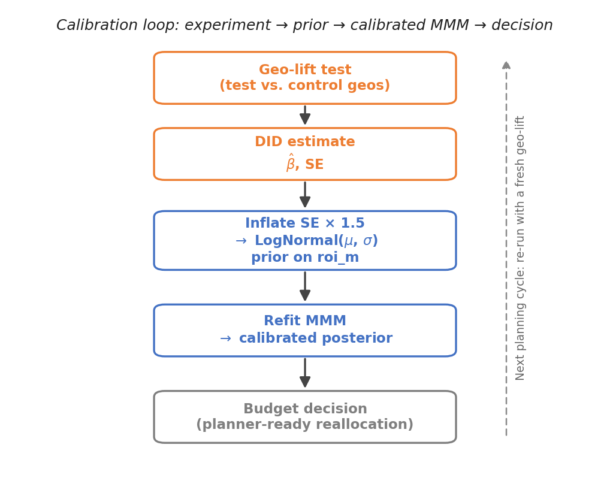
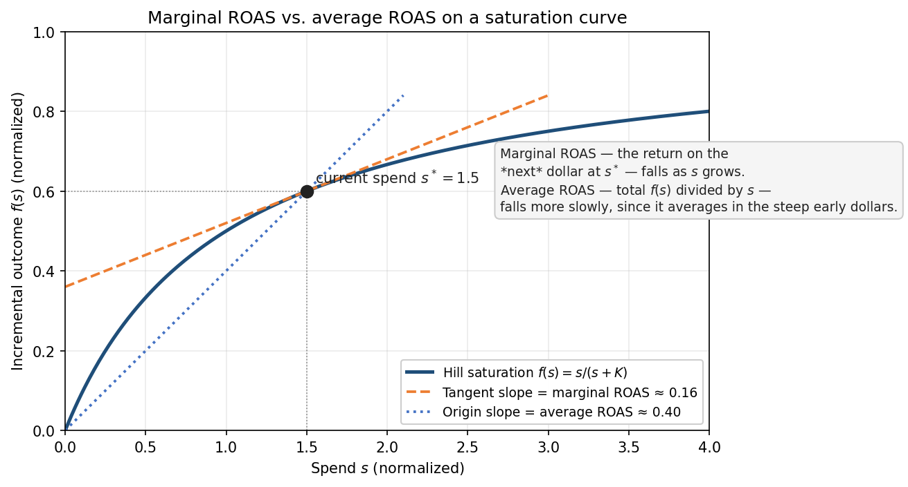
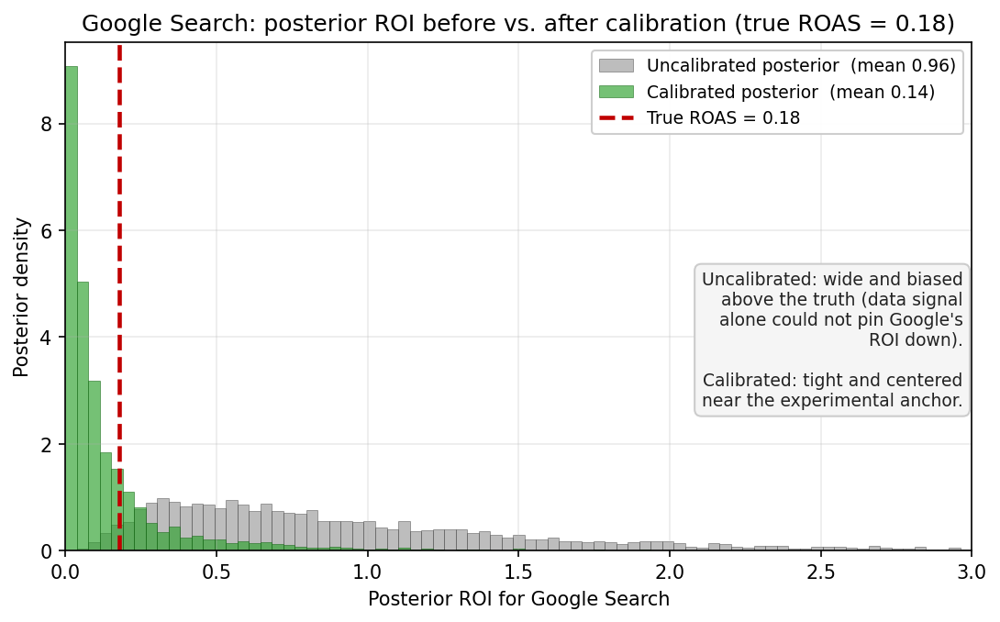

6.3 Calibrating MMM with Experiments
The MMM in Section 6.2 measures, simulates, and optimizes, but its estimates are fundamentally observational. The model observes that weeks with higher TikTok spend tend to have higher sales, and attributes part of that lift to TikTok. It cannot, by itself, distinguish genuine media effects from confounders: seasonal demand that coincides with campaign flights, promotions that run alongside media pushes, or competitive dynamics that move several variables at once.
MMM also has a structural identification problem. Media channels are usually correlated: brands raise spend across all of them during the same peak periods. When Meta, Google, and TikTok spend all spike in Q4, the model cannot cleanly separate their individual effects. The result is wide credible intervals and unstable ROI estimates.
Controlled experiments close the gap. A geo-lift test measures the causal incremental effect of a specific channel by varying spend across test and control geos. Feeding that estimate back into the MMM as an informative prior tightens the posterior and anchors one channel’s ROI in experimental evidence.
This section walks through the loop: design the experiment, estimate the lift, convert it to a prior, plug it back into the model, and run calibration as a continuous program.

Geo-Lift Tests
The most practical experiment design for MMM calibration is the geo-lift test (also called a matched-market test). Divide your markets into test and control groups, increase (or decrease) spend in the target channel for the test group, and measure the difference in outcomes.
Why geo-level? Because MMM operates at the geo-week level. A geo-lift test produces an estimate at the same granularity as the model’s inputs, making integration natural.
A typical design involves five decisions:
- Target channel. Prioritize channels with the widest credible intervals in the uncalibrated model, or channels where the optimizer recommends large shifts.
- Test and control geos. Split markets into groups with similar pre-period revenue trends. Parallel trends is the foundation of the DID estimator: if test geos were already growing faster before the experiment, the estimate will be biased.
- Intervention magnitude. A 5% spend increase is unlikely to produce a detectable signal in noisy weekly geo data. 20–50% is more typical.
- Duration. Four to eight weeks of treatment is common. Include a pre-period of similar length for the parallel trends check.
- Geo assignment. Assign larger markets to the test group for more statistical power.
experiment:
target_channel: TikTok
spend_multiplier: 1.2 # +20% spend in test geos
pre_weeks: 4
geo_assignment:
test: [DE, FR, IT, ES]
control: [NL, BE, AT, SE, DK]
periods:
experiment_start: "2025-07-07"
experiment_end: "2025-09-29"From Lift to ROAS
The standard estimator for geo-lift tests is Difference-in-Differences (DID): compare the change in revenue from pre to post in test geos against the same change in control geos. The DID coefficient \(\hat{\beta}\) is average incremental revenue per geo-week. Convert to ROAS:
\[\text{ROAS}_{\text{lift}} = \frac{\hat{\beta} \times n_{\text{geos}} \times n_{\text{weeks}}}{\sum \Delta \text{spend}_{g,t}}\]
This is a marginal ROAS (the return on the incremental dollar), not the average return across all dollars spent. The distinction is critical when converting the estimate to a prior, because the MMM posterior reflects average ROAS. We unpack this in the next section before showing the integration code.
Before using the estimate for calibration, verify three things: (1) parallel trends hold in the pre-period; (2) the ROAS estimate is positive; (3) the 95% CI is narrow enough to be useful as an anchor.
Marginal vs. Average ROAS
This point deserves emphasis because it is the most common source of confusion in calibration.
The geo-lift experiment measures marginal ROAS: the return on the incremental dollar of spend above the baseline level. The MMM posterior for roi_m reflects average ROAS: total media-driven revenue divided by total spend over the modeling period. Because of the Hill saturation curve, these are different quantities.

Consider a channel on the steep part of its curve (under-invested). Marginal ROAS is high: each additional dollar generates substantial incremental revenue. But average ROAS, which includes the inframarginal dollars, is lower. Conversely, a saturated channel has low marginal ROAS but may have reasonable average ROAS because the early dollars were highly productive.
This is why we cannot plug the experimental ROAS directly into the model as a tight prior. Doing so would force the average-ROAS parameter to take a value that only makes sense for the marginal dollar. The fix is to inflate the standard error of the experimental estimate before converting it to a prior, to give the posterior room to land somewhere between the marginal and average values, weighted by the data.
Integration with Meridian
Meridian supports two calibration mechanisms:
- Informative ROI prior (
roi_m): a channel-specific LogNormal prior based on experimental results. This is a soft constraint that shifts the MCMC starting point but allows the posterior to move away if the data disagree strongly. - Calibration period (
roi_calibration_period): a boolean array marking specific weeks and channels as experimentally validated. During sampling, the model constrains the predicted ROI for the marked channel during the marked period to be consistent with the experimental estimate. This is a stronger, more targeted constraint.
Both mechanisms can be used together. The informative prior shifts the starting point; the calibration period adds a tighter constraint during the experiment window.
Converting the DID estimate to a LogNormal prior. Note the se_inflated step: this is the marginal-vs-average adjustment we just discussed.
import numpy as np
def to_lognormal_params(mean, std):
"""Convert mean/std to LogNormal mu/sigma."""
variance = std ** 2
sigma_sq = np.log(1 + variance / mean ** 2)
sigma = np.sqrt(sigma_sq)
mu = np.log(mean) - sigma_sq / 2
return mu, sigma
# Example: DID estimate → LogNormal prior
roas_hat = 5.78 # DID estimate
roas_se = 3.73 # DID standard error
# Inflate SE (marginal vs. average ROAS adjustment) and apply floor
se_inflated = max(roas_se * 1.5, 0.50)
mu, sigma = to_lognormal_params(roas_hat, se_inflated)
# → mu ≈ 1.42, sigma ≈ 0.81Setting channel-specific priors in Meridian:
import tensorflow as tf
import tensorflow_probability as tfp
from meridian.model import prior_distribution, spec
from meridian import constants
channels = ["Meta", "Google", "TikTok", "TV", "OOH"]
# TikTok: calibrated from geo-lift experiment
# Others: default weakly informative prior
roi_mu = tf.constant([0.20, 0.20, 1.42, 0.20, 0.20])
roi_sigma = tf.constant([1.00, 1.00, 0.81, 1.00, 1.00])
prior = prior_distribution.PriorDistribution(
roi_m=tfp.distributions.LogNormal(
loc=roi_mu,
scale=roi_sigma,
name=constants.ROI_M
),
)
model_spec = spec.ModelSpec(
prior=prior,
media_prior_type="roi",
max_lag=12,
)The calibrated channel should show a tighter credible interval and a posterior mean closer to the experimental estimate. Other channels may also benefit from reduced uncertainty, since tightening one channel helps the model attribute remaining variation more precisely.
The companion notebook applies this same recipe to Google Search (the channel whose uncalibrated posterior was the demo’s least well-identified) and produces the before/after comparison in Figure 3. The TikTok worked example above and the Google Search illustration below run through the same to_lognormal_params → roi_m prior → refit pipeline; only the input DID estimate differs.

Running a Calibration Program
Calibration is not a one-time event. ROI changes as audiences evolve, creative fatigues, and competitive dynamics shift.
A practical annual cycle: Run the MMM in Q1, identify the channels with the widest credible intervals, run geo-lift tests in Q2–Q3, refresh the model in Q4 with calibrated priors. The Q4 model feeds into the next year’s budget planning.
Cost framing. A 20% spend increase in four geos for eight weeks may cost $50K–$200K. Frame this as an investment in decision quality: if the calibrated model shifts $2M in annual allocation 5% in the right direction, the payoff exceeds the experiment cost many times over.
When calibration fails. Sometimes the DID estimate is negative, nonsensical, or excessively noisy. Common causes: parallel trends violation, insufficient spend change, or external shocks during the test period. When this happens, do not force the estimate into the model. An unreliable calibration is worse than no calibration. Diagnose, adjust, and try again.
Calibration is iterative: better data → better models → better experiments → better data, looping each annual planning cycle.
Reliability Checklist
Calibration makes MMM more useful, but it does not automatically make every recommendation trustworthy. Before sharing budget recommendations with a CMO or CFO, run the model through a short reliability checklist. The goal is not to prove that the model is perfect. The goal is to catch the issues that would make the optimizer’s output unsafe to use.
Data Quality
- Enough history. Use at least two years of weekly data when possible. With fewer than 80 weekly observations, it becomes difficult to estimate adstock and saturation reliably.
- Real variation in spend. Only include channels where spend actually moves. If a channel spends the same amount every week, the model has little signal to estimate its effect.
- Correlated media flights. Check whether channels move together. If Meta, Google, TV, and TikTok all spike in the same weeks, the model may struggle to separate their individual effects.
Model Design
- Controls for non-media demand. Include seasonality, holidays, promotions, pricing, distribution, and other business drivers where relevant. Otherwise, the model may attribute normal demand spikes to media.
- Reasonable response curves. Inspect saturation and adstock curves. If a curve implies extreme lift from tiny spend changes, or no diminishing returns at all, the model may be fitting noise.
- No unsafe extrapolation. Treat optimizer recommendations cautiously when they push spend far outside the historical range. MMM is much more reliable for interpolation than extrapolation.
Validation
- Predictive performance. Check both in-sample and out-of-sample fit. A strong in-sample fit alone is not enough.
- Uncertainty. Look at credible intervals, not just point estimates. Wide intervals are a warning that the channel’s ROI is not well identified.
- Experiment consistency. Compare MMM estimates against geo-lift or holdout results where available. If the two disagree materially, investigate before using the model for budget reallocation.
If the model passes these checks, the optimizer’s output is a reasonable starting point for planning. If it fails several of them, the right next step is not to optimize harder. It is to improve the data, redesign the model, or run a better calibration experiment.
Key Takeaways
- MMM estimates are observational; experiments provide causal anchors. A geo-lift test can anchor one channel’s estimate and make downstream budget recommendations more trustworthy.
- Geo-lift matches the model’s granularity. MMM operates at the geo-week level, and geo-lift produces estimates at the same level.
- Marginal ROAS is not the same as average ROAS. The experiment measures the incremental dollar, while the MMM estimates average return. Inflate the standard error to give the posterior room to reconcile the two.
- Calibration is iterative. One to two experiments per year, rotating across channels, is more realistic than trying to validate every channel at once.
- Do not use the optimizer blindly. Before sharing recommendations, check data quality, model design, uncertainty, extrapolation risk, and consistency with experiments.